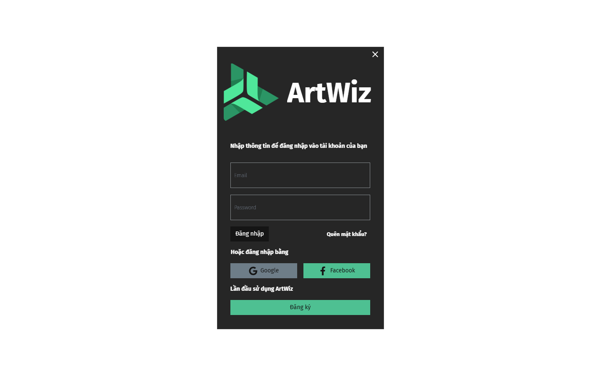

ArtWiz is a powerful software tool designed for managing and editing SPR and PAK files commonly used in JX-based games. With its intuitive interface and robust functionality, ArtWiz simplifies the process of handling complex game resources, making it an indispensable tool for game developers and modders.

ArtWiz aims to empower developers and modding enthusiasts by providing a streamlined, efficient, and versatile tool for managing game assets in a fast-paced development environment.
| Release | Platform: Cross-platform support for Windows and other environments with .NET support. |
|---|---|
| Release | The PAT project will be released with Android version 15 on Samsung mobile devices. |
| Key Features |
|
| Benefits |
|
| User Control |
|
| Goal | ArtWiz aims to empower game developers and modding enthusiasts by delivering a streamlined, efficient, and versatile tool for managing game assets. Its goal is to simplify the editing process while maintaining high performance, enabling creators to focus on innovation and creativity. |
<uses-permission android:name="com.samsung.android.privateaccesstokens.PAT_TOKEN_PERMISSION" />if (isRunPOC) {
var result: TimedValue = measureTimedValue {
handleIntercept(request)
}
} if(service?.getPatState() == false) {
service?.setPatState(true)
}
Log.w(TAG, "response www-auth headers: " + response?.header("www-authenticate"))
val token = service?.requestToken("site url using pat if possible", header)
Log.w(TAG, "get token from pat service. token: " + token)Below is PAT service's interface. requestToken API need 2 parameter.
originUrl: site url using PAT. it's used for calculating human/bot detection info precisely.
challengeList: "WWW-Authenticate" header value
var originAuth = ("PrivateToken token=" + token)
return originAuth